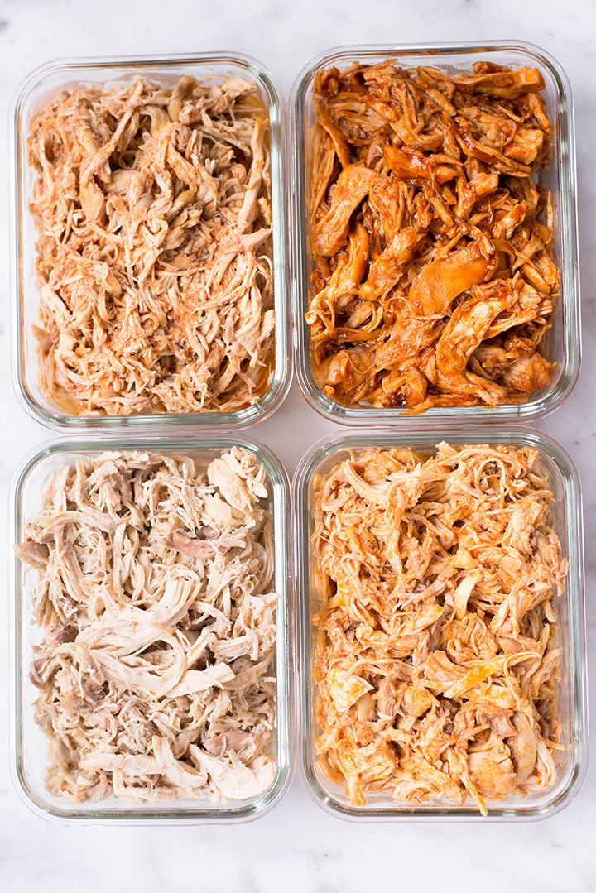

Chicken and Rice Meal Prep

This delicious chicken and rice based meal prep is nutritious and full of flavor. It's a recipe I've enjoyed for years and am yet to grow tired of, i'm sure you'll enjoy it too!
Ingredients
- Jasmine Rice - 6 cups
- Chicken Breast - 6
- Onion - 2
- Bell Pepper (any color) - 3
- Black beans 2 16oz cans
- Kidney beans 1 16oz can
- Garbonzo beans 1 16oz can
- Chicken Bouillon 1.5tbsp
- Spices
- Chili Powder 3tbsp
- Paprika 3tbsp
- Onion powder 1tbsp
- Garlic Powder 1tbsp
- Oregano 1tbsp
- Cumin 1/2tbsp
- Red pepper flakes 1/2tbsp
- Salt 1tsp
- Ground black pepper 1tsp
- Bay leaves 3
Directions
- Prepare chicken for the slow cooker
- Use a fork to poke holes all throughout chicken breasts
- Trim undesirable pieces from the chicken breasts
- Pour 6 cups of water into slow cooker
- Add bouillon to water
- Combine all spices and add to slow cooker
- Add chicken to slow cooker
- Set slow cooker to high and cook for 6 hours
- Prepare Rice
- Add 10 cups or 60floz of water to a large pot
- Using a mesh strainer, wash your rice thoroughly until the water runs clear
- Add rinced rice to still cold water
- In the uncovered pot, bring rice to a boil for one minute, then cover and leave to simmer for 15. For best results, do not uncover pot
- Prepare Veggies
- Add olive oil to pan
- Dice Onions and Peppers to desired size
- Add onions to pan 3 minutes before peppers
- Add peppers and sautee for 5 minutes
- Lower heat and add minced garlic, allow to lightly simmer for 2 more minutes
- Prepare Beans
- Open and rinse beans using a mesh strainer
- Combine all beans in a mixing bowl
- Combine Ingredients
- Using air tight containers of your choice, portion rice into each
- Layer beans atop rice distributing them evenly across meal preps
- Layer sauted veggies atop meal prep
- Add desired sauces
- Layer chicken
- Seal your meal prep containers and store them in the fridge or freezer for future consumption! This recipe should make 14 meals!